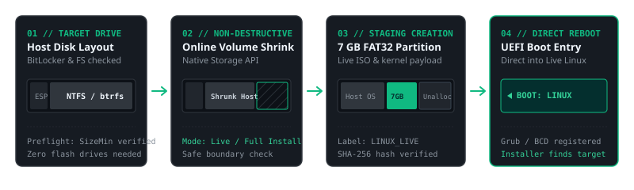
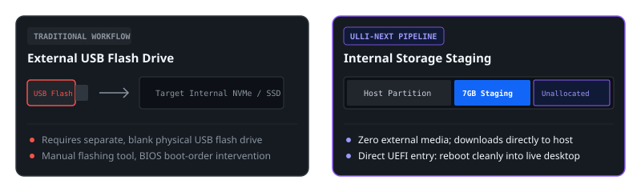

Linux Mint
Available
Version
22.3 · Cinnamon Edition
ULLI-Next configures and boots Linux distributions directly from an internal storage drive. By preparing an isolated 7 GB staging partition and registering a UEFI boot entry, you can test or install Linux without flashing external media.
Partition and boot-configuration changes carry risk of permanent data loss. Always back up critical data before use. The modern Qt/C++ rewrite is under active development and is not ready for real-world production installations.
ULLI-Next eliminates external media by turning internal disk geometry into a self-contained installation vector. Here is how the end-to-end pipeline operates:

The installer queries target drives via native storage APIs, verifies partition tables (GPT/MBR), checks BitLocker encryption status on the target partition, and queries filesystem boundaries to confirm shrink viability.
The host filesystem is shrunk online without unmounting. In Live Only mode, ~7 GB is freed. In Full Install mode, 30+ GB is freed to yield both staging space and target room for Linux.
A 7 GB FAT32 partition labelled LINUX_LIVE is formatted. The distribution ISO is downloaded, verified against authoritative SHA-256 hashes, and its kernel/initramfs payload is placed on the staging volume.
A direct boot option is registered with the system firmware or boot manager (via GRUB on Linux or BCD on Windows). Upon restarting, your PC boots directly into the live Linux desktop.

ULLI-Next can install a curated set of Linux distributions directly to your internal drive. The list below is provided for information only and reflects the distributions the installer builds are prepared for. It is not an ISO download catalogue, and it is not the authoritative source of installer images, filenames, or checksums — always obtain installation media from each distribution's official website.
ULLI-Next has multiple distinct codebases at very different stages of maturity. We maintain total technical honesty: here is the exact validated capability of each implementation.
--check-deps)
Direct disk modification and UEFI configuration changes inherently involve risks. Follow this protocol to ensure data safety before executing any installer operations.
Back up all essential files, keys, and documents to an independent external drive or cloud storage before beginning.
BitLocker must be inspected on the target partition. If locked, shrinking will fail; suspending or decrypting protection may be required.
ULLI-Next targets modern UEFI systems. Legacy BIOS / CSM boot is unsupported. Secure Boot requirements depend on the selected Linux distribution.
Certain motherboard firmware does not automatically prioritize new boot entries. Ensure you can access your BIOS/UEFI boot menu (e.g. F12, F11, Esc).
User requests ~7 GB total shrink. Creates a 7 GB FAT32 staging partition. Leaves no additional unallocated space. Ideal for testing a desktop environment without committing storage.
User requests N GB (where N ≥ 30 GB). The engine dedicates 7 GB to the FAT32 live staging partition and leaves the remaining N − 7 GB genuinely unallocated for the Linux distribution's native installer.
Images outside the catalogue must have maximum 7 GB total size and no single file inside the ISO exceeding 4 GB (due to FAT32 filesystem constraints).
ULLI-Next is an open-source initiative dedicated to streamlining Linux adoption and system recovery.
ULLI-Next is a community-maintained fork of the original ULLI project created by rltvty2. It is currently maintained by Prakhar Khokhar.
The project maintains the functional legacy Python/GTK installer for Linux and PowerShell/Windows Forms installer for Windows, while engineering a modern, unified C++20 and Qt 6 application with explicit installation plans, partition previews, and safety checks.
For a human-authored, non-AI implementation of the original concept, refer to ULLI-organic.
Contributions in the form of hardware testing across diverse UEFI firmware, edge-case disk partition reports, bug reporting, and code reviews are warmly welcomed via GitHub Issues and Pull Requests.
ULLI-Next is free and open-source software, licensed under the terms of the GNU General Public License as published by the Free Software Foundation, version 3.